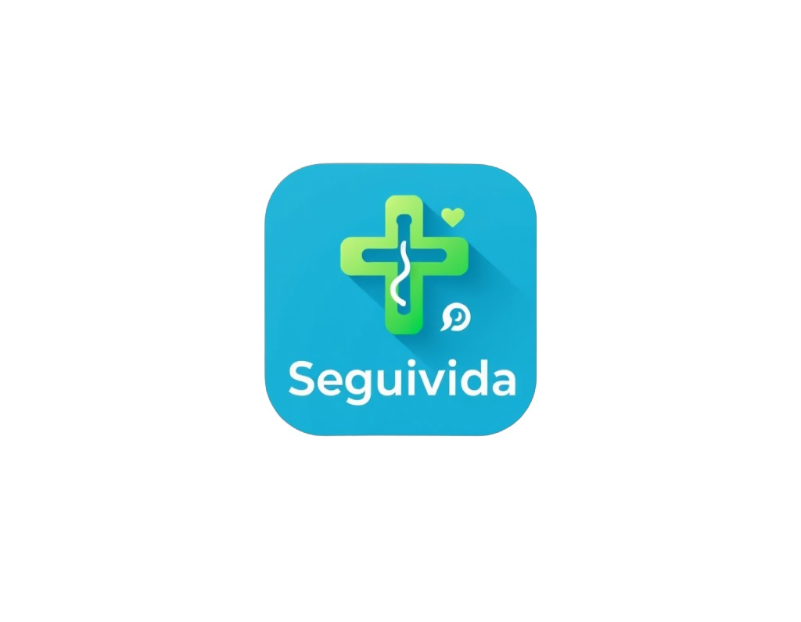

<ion-app>
  <ion-menu content-id="main-content">
    <ion-header>
      <ion-toolbar class="cor">
        <ion-title>Menu</ion-title>
      </ion-toolbar>
    </ion-header>
    <ion-content>
      <div class="menu-container">
        <ion-list>
          <!-- Dark Mode Toggle -->
          <ion-item button (click)="toggleDarkMode()">
            <ion-icon name="moon-outline" slot="start"></ion-icon>
            Modo Escuro
            <ion-toggle slot="end" [checked]="darkMode"></ion-toggle>
          </ion-item>

          <!-- Sobre a CDT -->
          <ion-item button [routerLink]="['/sobre']">
            <ion-icon name="information-circle-outline" slot="start"></ion-icon>
            Sobre a SGD
          </ion-item>
        </ion-list>

        <!-- Logout Section -->
        <ion-list class="logout-container">
          <ion-item class="logout" [routerLink]="['/login']" button>
            <ion-icon name="log-out-outline" slot="start"></ion-icon>
            Sair da Conta
          </ion-item>
        </ion-list>
      </div>
    </ion-content>
  </ion-menu>

  <ion-router-outlet id="main-content"></ion-router-outlet>
  <ion-header>
    <ion-toolbar class="custom">
      <ion-buttons slot="start">
        <ion-menu-button></ion-menu-button>
      </ion-buttons>
      <ion-title>SEGUIVIDA</ion-title>
    </ion-toolbar>
  </ion-header>

  <ion-content>
    <div class="card-container">
      <ion-card color="success">
        <ion-card-content routerLink="/ficha-medica">
          <h2>FICHA</h2>
          <p>Veja a sua <b>ficha</b></p>
        </ion-card-content>
      </ion-card>

      <ion-card color="warning" (click)="buscarHospitais()">
        <ion-card-content>
          <h2>HOSPITAIS</h2>
          <p>Veja os <b>hospitais</b> mais próximos</p>
        </ion-card-content>
      </ion-card>
    </div>

    
  </ion-content>
</ion-app>
